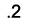
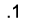
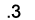
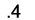

|
In preparation for this section, please review hamzat al-wa Sl هَمْزة الوَصل , the sun letters and moon letters الحُروف الشَّمْسِيّة وَالحُروف القَمَرِيّة in Unit 8 of Alif Baa.
(Audio of Arabic to be added)
This is an area that deserves great attention because:
- It helps you gain speed/fluency in speaking
- It helps you gain speed in reading both silently and aloud, and
- It helps improve your comprehension skills as you learn how to recognize where words end and where others begin.
There are five points to remember when pronouncing الـ in the middle of speech at this stage of your learning. The first two are covered in this lesson and the other three will be covered in the Pronunciation section of chapters 6 and 7.
In the middle of speech and in fast speech, a word starting with الـ usually sounds as if it were connected to the word preceding it. To achieve this effect, the word starting with الـ must be linked to the last vowel of the word that precedes it. The linking takes two forms depending on whether the letter immediately after الـ is a moon letter or a sun letter . This process is sometimes also described in terms of elision, i.e., unless preceded by a pause or a period, الـ must be elided partially or totally.
Examine the examples below and click on the Arabic to hear it pronounced.
| Moon letter after الـ , e.g., في الْبيت |
|
In this example, همزة الوصل is elided, i.e., it becomes completely silent as you link the في to the لْـ in الْبيت .
| Sun letter after الـ , e.g., في الشَّارع |
|
In this example the whole of the الـ is elided, i.e., the whole الـ becomes completely silent. In this case, you go straight from the last vowel preceding the الـ to the first (sun) letter that follows it. الـ is elided altogether.
Remember that when الـ is at the beginning of a sentence or after a pause, the linking rule does not apply. The hamza at the beginning of the الـ needs to be pronounced as an أ with a فَتْحة (i.e., as “a”). Listen to the hamza of the الـ in the following examples.
| .الجامعة جميلة |
.البيت كبير |
|
As you know, the end of every word in Modern Standard Arabic and Classical Arabic normally carries one of three vowels indicating the grammatical role that that word plays in the sentence (كَسْرة/ضَمَّة/فَتْحةَ َ / ُ/). It is that final vowel that is usually used in applying the linking or elision rule. Although at this stage in the course you are not yet ready to determine what the correct grammatical vowels are for every word you use, rules 2-5 will offer you strategies for greatly improving your fluency in speaking and reading aloud. You will learn in this chapter and chapters 6 and 7 how to apply the linking rule to a large group of words that you know: feminine nouns, verbs, prepositions, and words following prepositions.
Whenever you listen to authentic speech, pay attention to the way words definite with الـ blend in with the words that precede them. Practice consciously listening for where a word ends and where the following definite word begins. Definite words starting with sun letters tend to be the hardest to detect because you do not hear the الـ at all.
You will learn to apply the linking rule to the remaining word categories when you learn how to determine their grammatical endings. For now concentrate on practicing to use and recognize rules 2-5.
ة
When الـ is preceded by ة “taa marbuuTa” that is not in an iDaafa, you can normally choose to leave the ة silent or add the grammatically determined vowel to the ةَ/ ةُ / ةِ) ة ). So far, we have been leaving the ة silent. To apply the linking rule, you will need to link the( َ ) فَتْحة that always precedes the ة within the word to either the لـْ in the الـ or the sun letter immediately following the الـ (depending on whether you are dealing with a moon letter or a sun letter respectively, as explained above).
Examine the examples below and click on the Arabic to hear it pronounced.
.السيّارَة الصَّغيرة  |
.السيّارَة الْجديدة  |
|
In example 1, you link the رَ to the لـْ , eliding همزة الوصل .
In example 2, however, you link رَ directly to صـَّ, eliding the whole of the الـ .
From now on, always keep an eye on words beginning with الـ that are coming up in your speech or in the text that you are reading and try to apply this rule until it starts to come naturally.
Remember that in an إضافة the ة “taa marbuuTa” is always pronounced, i.e., is not silent, unless it occurs in the last term of the إضافة.
Now apply the linking rule and the silent ة rule as you practice reading aloud the following sentences. Remember that when الـ is at the beginning of a sentence or after a pause, the linking rule and therefore the silent ة rule do not apply.
When you are ready, send all sentences as a sound file to your instructor.
.اللّغة العربيّة جميلة |
.العائلة السودانيّة تسكن في شارعنا |
.المكتبة الجديدة ة قريبة من بيتي |
.الطالبة التونسيّة الجديدة تعمل دائما |
|
|